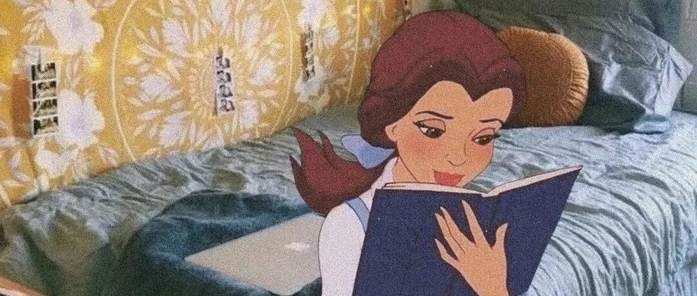

你与实现目标的距离，只差这份书单了 | 9月书单
和 我 一 起 治 愈 生 活

图：@秋秋
文：@秋秋
大家好，我是秋秋。
上个月真的太忙了，说好每个月看完4本书，最后只完成1本，还是为了治疗自己的拖延看的《拖延症患者的自救手册》，太尴尬了。
所以9月，我挑选了7本非常不错的书，从内容到输出给自己制定了一个阅读计划。
如果你最近没灵感、不知读什么，或者也想和我一样从这个月开始好好读书、实现目标，那就继续看下去吧。


这本书是因为我在公司晋升答辩的时候，一个leader问我的。他问在场有人看过《三体》吗？有的点头、有的摇头。
而我，就是摇头的那一个。

所以我痛下决心，这个月一定要读完！
因为我从小是不太爱看科幻的那种人，《哈利波特》也还是我大学才看的😭 脑海里就对科幻的事不感兴趣，对古代、近代小说倒是很喜欢。
我真的有很多短板，就希望这本书能成为我第一本看完的玄幻小说吧。
期待获得：
1.对地球宇宙的宏观认识
2.对科技知识的学习
（9月底我会来写读书笔记，复盘自己有没有获得期待的东西）

这本书是从我流鼻血的时候开始关注的，熬夜那一段时间，我是经常流鼻血，简直吓死人。
后来我就开始对养生、健康感兴趣。（也就是那个时候报了健康管理师，不为别的的，就为身体好）
包括以前我也好奇，为什么很多人可以加班到11点都不困，而我10点就哈欠连连；为什么有的人能5点就起床，而我考研的时候也试过，结果一天都提不起精神。

后来我才知道，每个人的生物节律都不同，有的人相对更适合早起，有的人晚睡更有精力。
根据不同的生物节律，这本书把人分为4种，之后作者给出了最适合你的作息时间表，还一周一周教你养成良好作息习惯。
我现在都是每天晚上10点多就睡觉，早上6点多起床，状态好了，也不流鼻血了，感觉每天还都能做好多事。
期待获得：
1.调节好自己的作息
2.让更多人知道这本好书
（希望自己看完书写篇文章，能帮助大家也找到最适合的作息时间）

如何成为领先的少数人？这本书或许会告诉你答案。
书里面讲了怎么高效工作、怎么与同事相处、怎么用工作赋能自己、以及晋升之道之类的。
我大概翻看了一下，里面有非常多有趣的观点。比如：你的努力，别让其他人知道。（好腹黑哈哈 ）
）

不要把工作当成工作，而是当做未来的踏板。（有点道理 ）
）
期待获得：
1.极简的工作方法
2.让工作赋能自己，而不是消耗自己

这本书是为了训练我家六一才买的，是一本漫画书，所以非常好读。
里面也讲解了很多养狗常识：像狗狗不会定点大小便，很可能是你放的狗厕所没有固定位置；总是对狗狗大吼大叫，它会变得更亢奋，最好的方法就是转过身去不理它。
附六一萌照一张，现在已经7个月了。

期待获得：
1.了解狗狗的一些行为习惯背后原因
2.理解狗狗

上一本书主要是理解狗狗的心理和行为，这一本就是训练狗狗和了解狗常见狗疾病。
刚开始我还想过，只要六一能健康快乐成长，学习坐、趴下、伸手都无所谓，直到现在，它连我的话都不听了。
看了书我才知道，让狗狗学习一点基本口令才是对它负责的表现，让它有规矩，真的对大家都好。
期待获得：
1.学会训练狗狗
2.了解狗狗常见疾病预防
以上这两本书都属于不重要不紧急的书，所以用晚上睡前或者闲暇时间看就好。

我好像对原生家庭的话题一直很有兴趣，时间越久越发现，一个人的言行举止、思维模式，真的受家庭影响很大很大。
这本书也是我刷抖音的时候看到的，讲的是一个大山里的孩子如何从原生家庭中走出去，最后考上名校的故事。
书里面的父母就是非常传统，认为孩子都不要上学、还经常给孩子哭穷那种。
这本书也是比尔盖茨力荐，年度最佳书，希望看了之后我也能更坚毅吧。
期待获得：
1.学习女主坚毅的精神
2.摆脱原生家庭束缚、积极成长

最后一本书也是漫画书，其实我写这篇文章之前就已经看了一大半了，因为真的很好读。
里面讲了直子一个人住在东京的故事，包括家里的东西越来越多，怎么一个人吃饭，一个人不敢看恐怖片之类的，轻松治愈。

我也不期待获得什么，就看完之后有个好心情就好了。
以上就是我9月的书单了，有小说、有漫画、有生活、有学习，但是无一例外，都希望自己变的更好：
 一些书可以让自己获得成长，比如《你当像鸟飞往你的山》
一些书可以让自己获得成长，比如《你当像鸟飞往你的山》
一些书可以让自己工作学习效率更高，比如《极简工作法则》《四型生理时钟》
一些书可以听拓宽自己的视野，探索未知领域，比如《三体》《狗狗不是故意的》
一些书可以充拾对生活的向往，比如《一个人住第5年》
书的搭配也是有轻有重，两本小说应该会拿出大部分时间来看，工具书主要用用思维导图梳理出大纲，漫画类的书闲暇时间就能看，不用拿出整块时间。
最后，回答两个问题。
1.为什么都是实体书？
因为我用手机看书容易走神，这些书就放在我书桌旁边，随手抓过来就能读，感觉氛围很好。

2.怎么确定书有好好读完？
我的方法就是做读书笔记。小说类的归纳金句，工具书找出方法论并践行，其他书能填满闲暇时间即可。

总之，期待9月能让知识填满大脑，也让我们一起好好读书吧～
其他文章推荐：

原创文章，转载请告知本人并标注来源
工作联系：17865514429 （微信）
请注明来意 :)
@微博：秋秋一日甜
喜欢记得星标，让我们一起成长